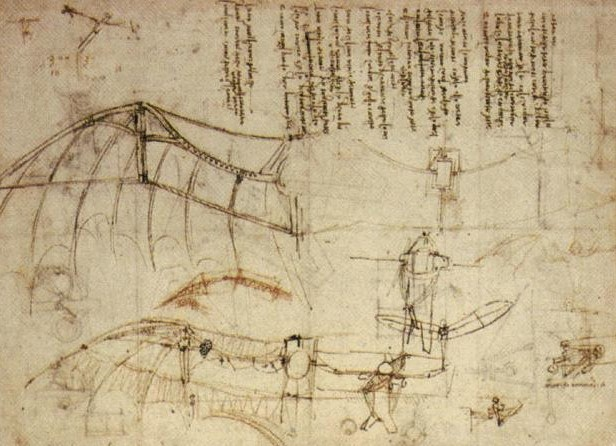

Leonardo wanted to fly. Not as a daydream: he sketched machines, wrote design rules and thought hard about the engineering. You would expect him to copy the animal that flies best. But look at the rule he wrote down:
In his own words
Remember that your flying machine must imitate no other than the bat, because the web is what by its union gives the armour, or strength to the wings.
If you imitate the wings of feathered birds, you will find a much stronger structure, because they are pervious; that is, their feathers are separate and the air passes through them. But the bat is aided by the web that connects the whole and is not pervious.
Here is the engineering reason. A bird's wing is made of separate feathers, and air slips through the gaps. A bat's wing is stretched skin, one connected sheet with no gaps. His word for a leaky wing is pervious; the bat's web is not. For a machine that has to push against the air, a solid surface grabs more of it. His choice is not about style. It is about air.

Where does the pilot go?
In his own words
Man when flying must stand free from the waist upwards so as to be able to balance himself as he does in a boat so that the centre of gravity in himself and in the machine may counterbalance each other, and be shifted as necessity demands for the changes of its centre of resistance.
The pilot is not strapped in. He stands up from the waist and leans to steer, the way you shift your weight in a boat. Leonardo wants the pilot's body to be part of the controls.
Then he lets himself dream
Elsewhere in his notebooks, on a different page, he wrote something closer to a wish than an instruction:
In his own words
The great bird will take its first flight;--on the back of his great swan,--filling the universe with wonders; filling all writings with his fame and bringing eternal glory to his birthplace.
That one sounds nothing like the wing notes. It is a poet's line about a machine that has not been built yet.
Did it fly?
As far as historians know, Leonardo never built this flapping-wing machine at full size. Later engineers worked out why: human arm and leg muscles cannot flap wings hard enough to lift a person. But the way he asked the question, which animal should we copy and why, is how engineers still work today. Copying nature to solve a problem has a name: biomimicry.
Words to know
- pervious
- letting something (here, air) pass through
- web
- the stretched skin between a bat's finger bones that forms its wing
- centre of gravity
- the balance point of an object, where its weight acts
Try it
Optional. For after your session with Rocky, on your own time. Ask a grown-up before you use any website.
- Museum of Science, Boston: Inventions Quiz. Look at sketches of Leonardo's machines and pick which modern invention each one became.
- Paper-wing test: fold two identical paper gliders. Cut a few slits in one wing of the first (like gaps between feathers) and leave the other solid. Throw both the same way. Which flies better?